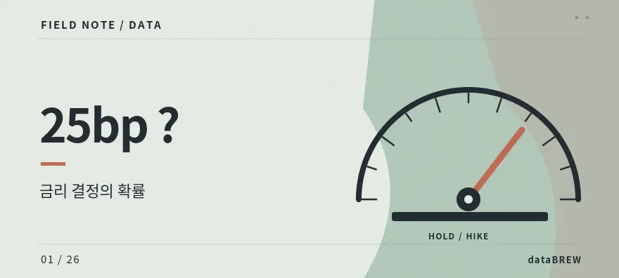
BOK워치
다음 금통위에서 금리는 어떻게 결정될까?
KOFR 선물 가격을 모형으로 바꿔 다음 금통위의 동결·인하·인상 확률을 게이지로 보여 줍니다. 총재 발언과 의사록, 통방문 문구 변화, 증권사·IB 전망 컨센서스를 한 화면에서 비교합니다.
독립 데이터저널리즘 프로젝트
:사실은 진하다
데이터로 내린 풍미깊은 뉴스
기자가 AI로 만든 데이터 저널리즘 프로젝트 26개. 데이터를 탐색하고(DATA),
직접 경험하며(EXPERIENCE), 기록과 지식을 쌓아 간다(INTELLIGENCE).
모든 프로젝트는 서로 이어져 있습니다.
WATCH SERIES · 5 PROJECTS
경제·금융·부동산 시장을 지속적으로 관측하고 새로운 지수와 분석 도구를 만드는 시리즈입니다. 다섯 서비스가 하나의 관측망을 이룹니다.

다음 금통위에서 금리는 어떻게 결정될까?
KOFR 선물 가격을 모형으로 바꿔 다음 금통위의 동결·인하·인상 확률을 게이지로 보여 줍니다. 총재 발언과 의사록, 통방문 문구 변화, 증권사·IB 전망 컨센서스를 한 화면에서 비교합니다.
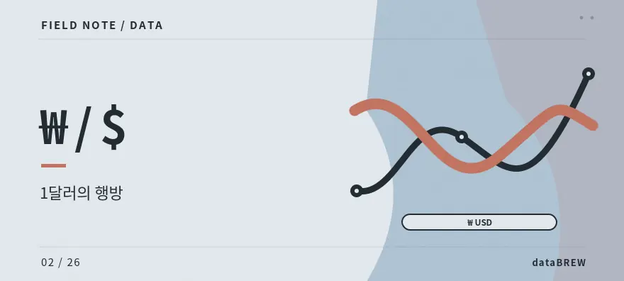
원/달러 환율은 앞으로 어디까지 움직일 수 있을까?
달러당 원화값의 7일·30일 뒤 50·80·90% 예측구간과 특정 환율 도달 확률을 계산합니다. 모형이 실제로 얼마나 맞아 왔는지 성적표(CRPS)로 공개하며, 방향 예측이나 투자 조언은 아닙니다.
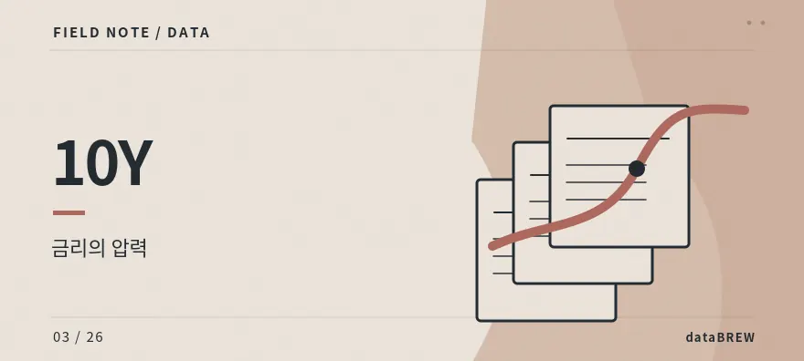
돌아오는 빚, 감당할 수 있을까?
미국 10년물과 한국 국채의 7·30·90일 후 금리 예상 범위를 띠로 보여 주고, 만기가 돌아오는 국채를 지금 금리로 갈아탈 때 늘어나는 이자를 시나리오별로 계산합니다. 460개 종목의 만기 사다리와 세계 부채 지도도 함께 봅니다.
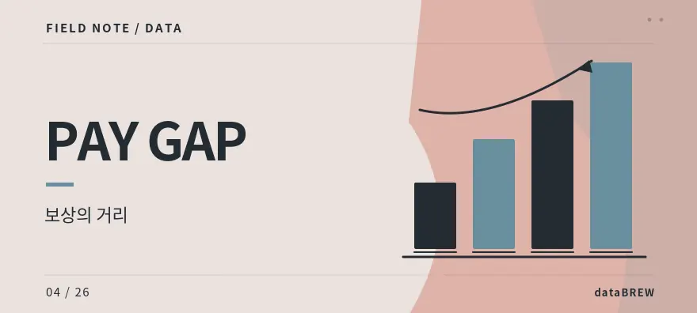
내 친구는 얼마 벌까?
5,463개 기업의 평균연봉을 검색하고, 친구들이 다니는 회사로 순위를 매기거나 2~4개 회사를 나란히 비교하는 월급 배틀을 할 수 있습니다. 모든 값에 DART 공시인지 사람인 추정인지 출처와 기준연도를 표시합니다.
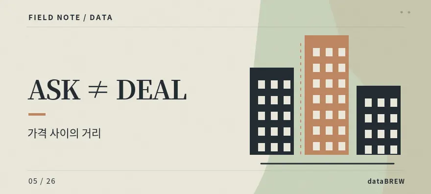
집주인의 호가는 실거래가보다 얼마나 높을까?
서울 25개 구 110개 표본 단지의 호가 중위값을 최근 90일 실거래 중위값과 비교해 네고 압력지수로 보여 줍니다. 매물 증감률과 구별 시장심리 지도도 함께 확인합니다.
CRAFT SERIES · 4 PROJECTS
누적 접속 집계 중
조직과 이해관계, 경쟁과 의사결정이 얽힌 현실을 게임과 시뮬레이션으로 재구성하는 시리즈입니다. 가상 설정 위에서 직접 선택해 봅니다.
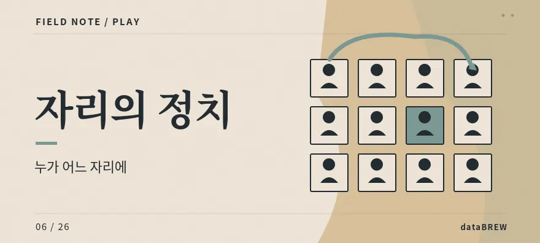
이번 인사에서 원하는 부서로 갈 수 있을까?
3D 블록 기자를 만들어 커리어를 쌓고 희망 부서를 정한 뒤, 추석 이후 4주 동안 부서장 면담과 소문으로 인사 농사를 짓습니다. 1만 번의 시뮬레이션으로 계산한 발령 확률이 결과를 가르는 가상의 게임입니다.
누적 접속 –
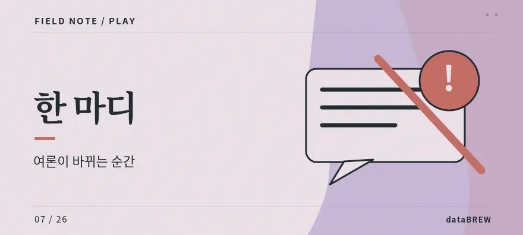
홍보팀장이 되어 6번의 위기 취재를 막아낼 수 있을까?
가상 기업의 홍보팀장이 되어 단독·제보·공시·탐사·검찰·오너의 6단계 위기를 넘기는 전략 게임입니다. 기자는 12유형으로 나뉘어 같은 대응도 상대에 따라 통하거나 독이 되고, 생존 확률은 몬테카를로로 시뮬레이션합니다.
누적 접속 –
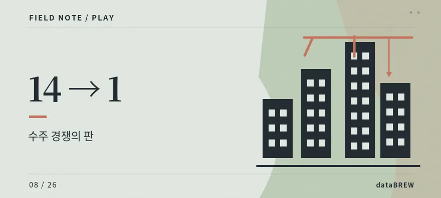
재건축 수주전에서 목표 수주액을 채울 수 있을까?
가상 건설사 8곳 중 하나를 골라 15개 단지의 조합원 표심을 공략하는 턴제 전략 게임입니다. 정보와 예산, 시간 중 무엇에 먼저 쓰느냐가 목표 수주액 달성을 가릅니다. 모두 가상 설정입니다.
누적 접속 –
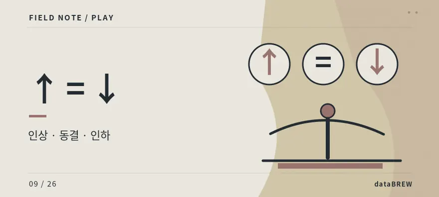
금리는 당신이 결정한다. 그 대가는 경제가 치른다.
한은 총재가 되어 2027년 여덟 차례 금통위에서 기준금리를 결정하는 통화정책 전략 시뮬레이션입니다. 기자회견 답변과 위원 설득, 시장 반응을 거쳐 임기 말 2029년 평가까지 이어집니다. 경제 수치는 가상 설정입니다.
SPORTS SERIES · 5 PROJECTS
선수와 팀의 기록을 모으고 비교하며 새로운 분석으로 스포츠의 질문을 푸는 시리즈입니다. 기록관, 지수, 비교, 직접 참여가 함께 있습니다.
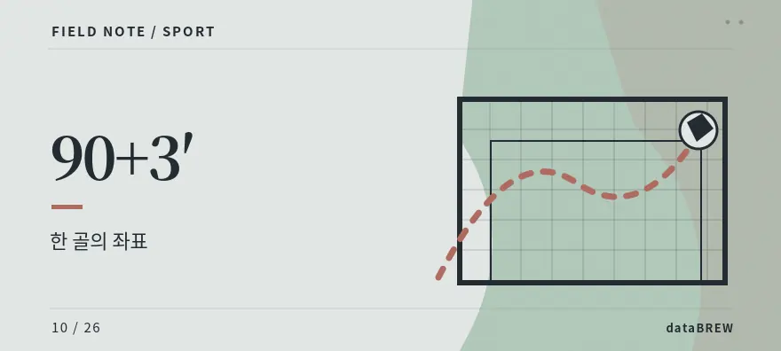
손흥민의 모든 골을 기록하다.
프로 1군과 A매치 통산 302골을 한 골씩 출처와 함께 기록한 전수 아카이브입니다. 팀·대회·시즌·상대별 필터와 득점 패턴, 슈팅 위치·xG, 골 장면 영상 링크까지 볼 수 있습니다.
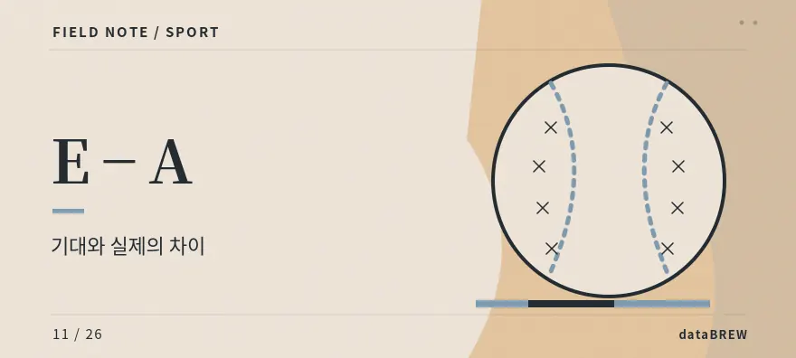
기대를 뛰어넘은 선수는 누구인가?
직전 3시즌 기록과 나이로 시즌 전 기대 WAR를 추정하고, 실제 WAR와의 차이(E-WAR)로 기대를 뛰어넘은 KBO 선수를 찾습니다. 2020~2026 시즌을 구단·포지션별로 정렬하며, 기대치는 구단의 내부 기대가 아닌 통계적 추정입니다.
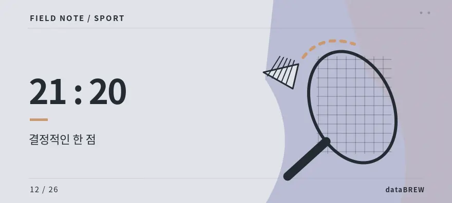
안세영은 역대 최고인가?
안세영의 수록 경기 390경기와 승률, 타이틀, 세계랭킹을 출처와 함께 정리하고 여자 배드민턴 전설 15명과 나란히 비교합니다. 기준을 직접 정해 나만의 역대 최고를 고르는 GOAT LAB도 있습니다.
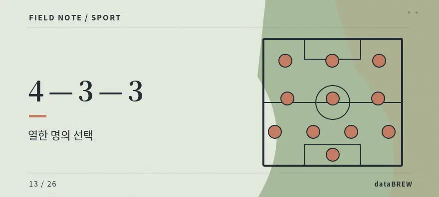
역대 최강의 베스트 11을 만들어라.
FIFA 랭킹 TOP 30 국가의 역대 국가대표 선수로 7가지 포메이션 중 하나를 골라 나만의 베스트 11을 짜고, 링크나 이미지로 공유합니다. 1900년대부터 2020년대까지의 선수 DB와 다른 이용자의 베스트 11 갤러리도 있습니다.
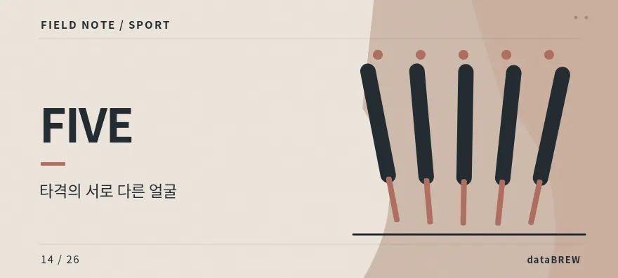
한국 야구 최고의 타자는 누구인가?
추신수·강정호·이대호·이승엽과 김도영, 다섯 타자의 기록을 KBO 기준으로 환산해 같은 연차에서 나란히 비교합니다. 환산 기록은 추정치이며 원 기록으로 바꿔 볼 수 있고, 직접 해 보는 타격 게임도 있습니다.
PROJECT ARCHIVE · 12 PROJECTS
정치·경제·사회와 도구를 데이터로 풀어낸 개별 프로젝트들입니다. 위 시리즈에 속하지 않는 서비스를 모았습니다.
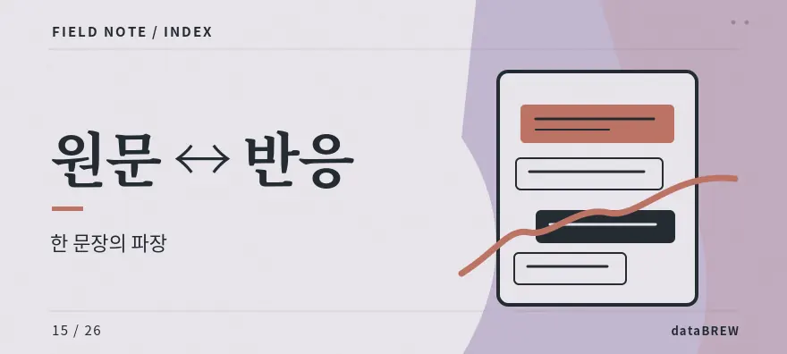
대통령의 X 게시물과 반응, 언어와 여론의 흐름을 지지율과 함께 봅니다.
게시물 1,065건을 AI로 분류해 주제와 감정 표현의 변화를 짚어 냅니다.
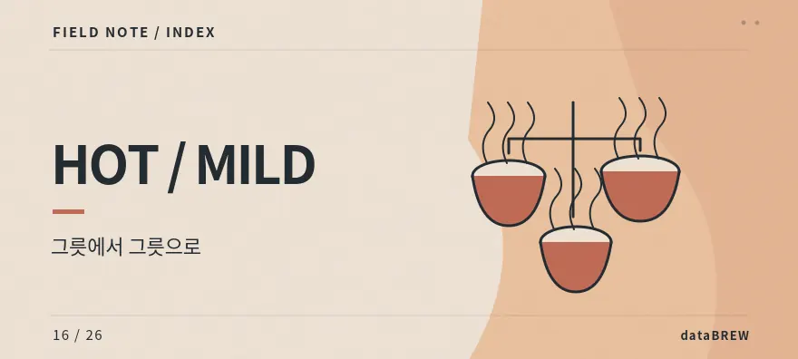
1963년부터 오늘까지, 한국 라면은 어떻게 갈라졌을까? 정당 계보도처럼 그린 라면 60년입니다.
국물파와 비국물파의 파벌·분열·집권 계보도에 라면 199종 도감, 랭킹, 오늘의 조합 연구소까지 담았습니다.
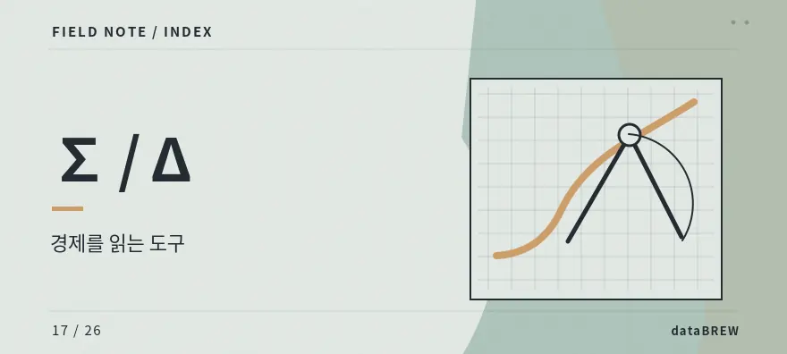
노벨 경제학상 수상자 101명의 연구와 대표 저작으로 세계경제를 설명해 온 이론과 방법을 살펴봅니다.
입문 설명에서 출발해 논문의 가정과 식별전략까지 원하는 깊이로 읽을 수 있습니다.
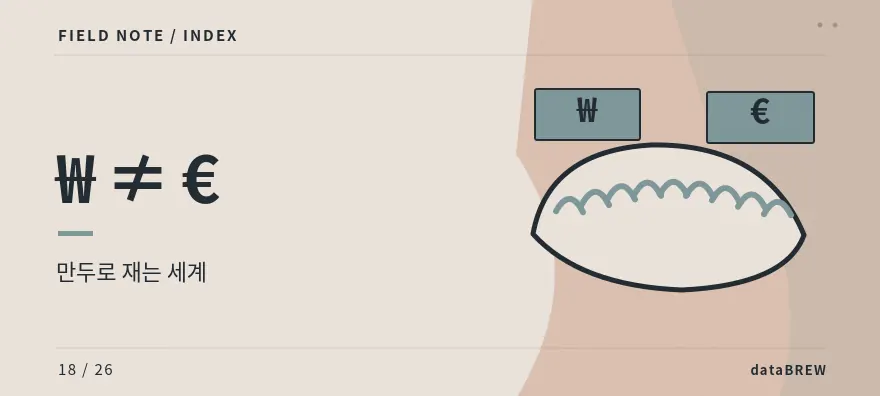
비비고 만두 100g의 나라별 판매가격을 빅맥과 함께 비교해 세계 물가와 환율을 읽습니다.
세계 만두 지도와 가격 순위, 구매력평가 환율 추정까지 판매처 출처와 수집일을 공개합니다.
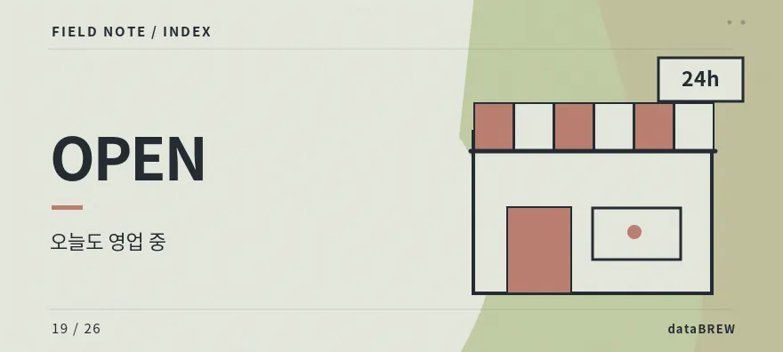
한국 자영업자의 창업과 경영을 체험하는 36개월 시뮬레이션.
업종과 상권을 고르고, 임대료·인건비·매출 조건을 설정해 가게를 직접 운영해 봅니다.
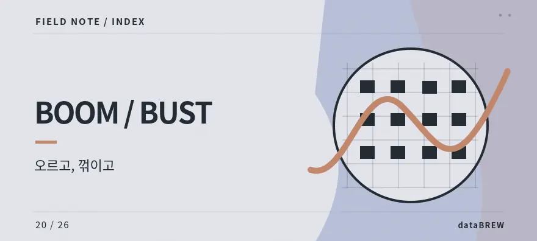
반도체 수출액은 폭증했는데 판매 개수는 줄었다. 한국 반도체 수출 20년을 통관데이터로 추적합니다.
D램·플래시·복합구조칩 237개월 기록과 한국은행 수출물가지수로 AI 슈퍼사이클의 구조를 읽습니다.
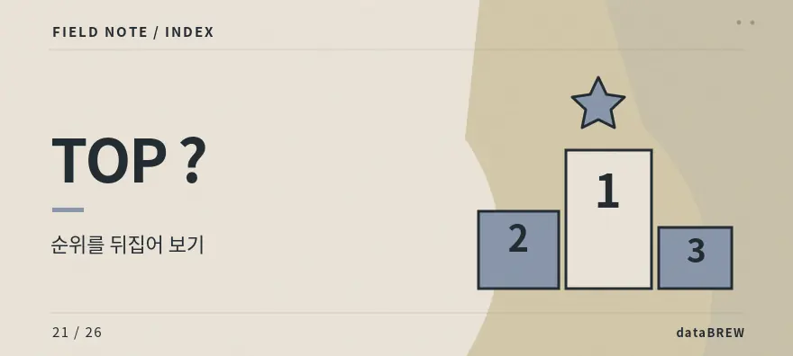
대한민국은 세계 몇 등일까. 우리가 생각하는 한국과 숫자가 보여주는 한국이 얼마나 다른지 확인합니다.
World Bank·OECD·UN 등 공식 통계 53개 지표, 28문항 퀴즈, 50년 시계열로 세계지도와 순위를 탐색합니다.
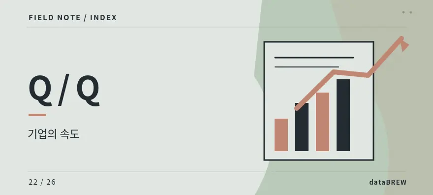
지난 3년, 가장 좋아진 기업은? 가장 큰 기업이 아니라 가장 크게 달라진 기업을 찾습니다.
OpenDART 공시 재무제표로 성장성·수익성·재무건전성·현금창출력의 변화를 측정하고, 체력과 모멘텀을 지도 위에 올려 봅니다.
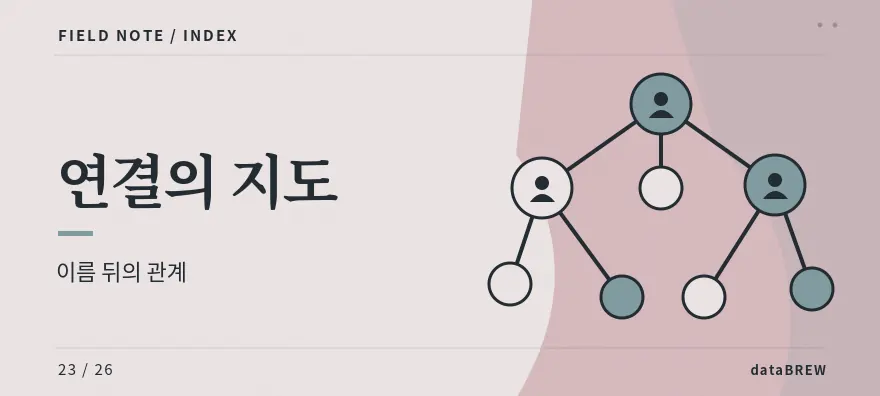
대한민국 기업 가문 연결망. 재벌가의 혼맥과 계열분리 계보를 한 장의 지도로 봅니다.
공시·공정위 자료로 교차검증한 100개 가문, 2,439명의 가계도와 가문 간 혼맥 58건을 탐색합니다.
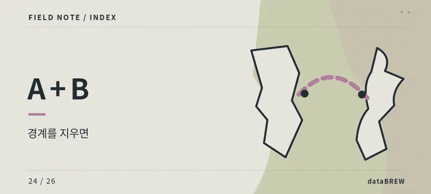
한국과 일본이 하나의 나라가 된다면? 두 나라를 더하는 일과 하나가 되는 일 사이를 따져 봅니다.
합친 규모와 생활 속 차이, 국민정서, EU의 경험을 보고 직접 공동체의 규칙을 설계해 보는 사고실험입니다.
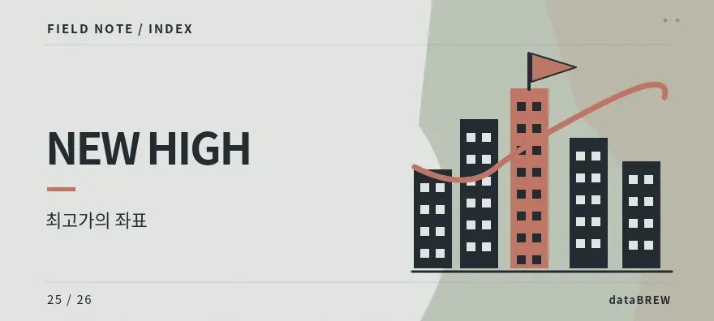
서울 아파트, 최고가에서 얼마나 멀어졌을까? 신고가 거래를 매일 추적합니다.
국토교통부 실거래가로 서울 25개 구의 신고가와 고점 대비 거리를 단지·면적 단위로 계산해 우리 아파트까지 찾아봅니다.
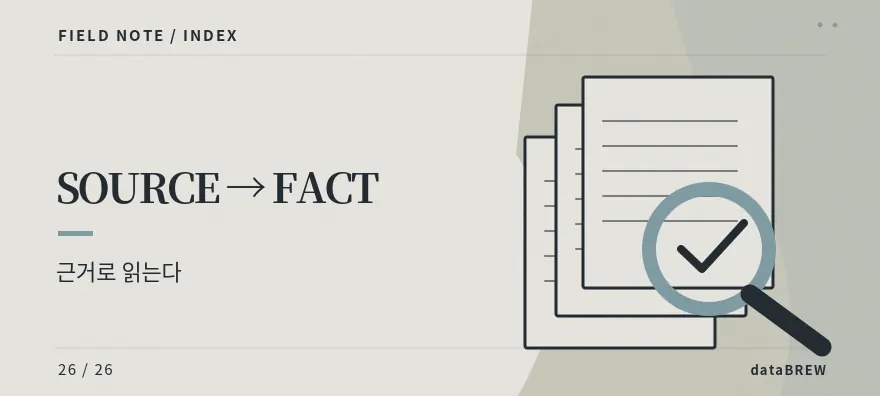
공식 데이터로 묻고, 근거로 확인하다. 기자를 위한 ChatGPT 공식 통계 조회 도구입니다.
한국은행 ECOS, KOSIS, OpenDART를 MCP로 연결해 수치·단위·기준시점·출처를 함께 확인합니다.